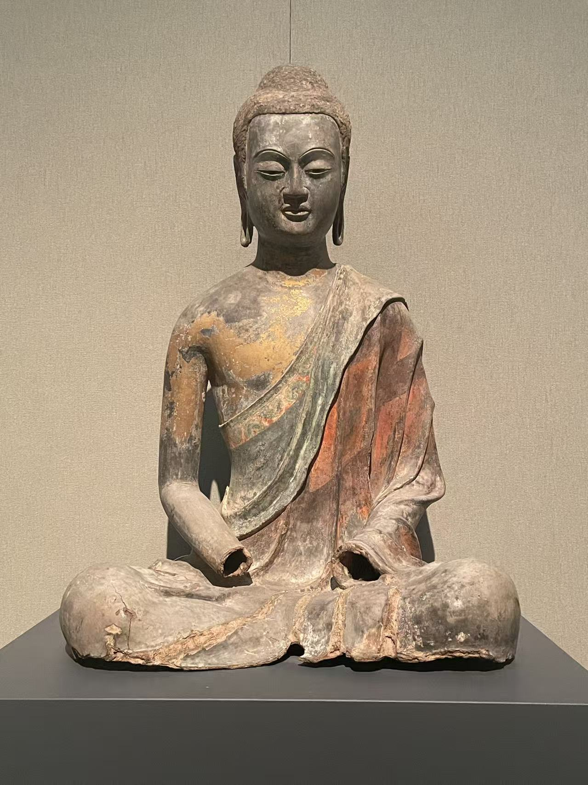

MUSEUM NOTES / CHINESE BUDDHIST ART
中国佛教艺术
选几件值得反复看的作品，
一个主题，一个主题地整理。
SCULPTURE NOTEBOOKS
造像 · 三个专题

6 件作品
水月观音
从大都会的水月观音，到纳尔逊的南海观音，慢慢比较六尊坐像的姿态、面容与残彩。
走进这一辑 →
6 件作品
宋辽金木雕
从菩萨立像、观音头像到十一面观音，看这一时期木雕的几种面貌。水月观音另成一辑，两边可以连着看。
走进这一辑 →
4 件作品
夹纻干漆造像
从唐代佛像、菩萨与佛首，到元代释迦牟尼像，细看干漆造像的表面与内部。
走进这一辑 →BUDDHIST PAINTING